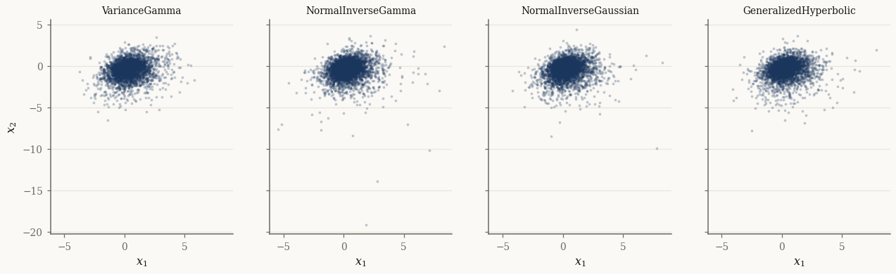

Normal variance-mean mixtures#
The four named mixtures — VarianceGamma, NormalInverseGamma,
NormalInverseGaussian, and GeneralizedHyperbolic — share one structure and
one API. Each has a marginal layer (the distribution of \(X\), what you
usually interact with) and a joint layer (the pair \((X, Y)\) with the latent
subordinator, used by the EM E-step). This tutorial exercises both layers.
import jax
jax.config.update("jax_enable_x64", True)
import jax.numpy as jnp
import numpy as np
from normix import (
VarianceGamma, NormalInverseGamma,
NormalInverseGaussian, GeneralizedHyperbolic,
)
from normix.utils.plotting import set_theme
set_theme()
np.set_printoptions(precision=4, suppress=True)
A common constructor#
All four marginals build from the location \(\mu\), the skewness vector \(\gamma\), a covariance \(\Sigma\), and the subordinator’s own parameters:
mu = jnp.array([0.0, 0.0])
gamma = jnp.array([0.3, -0.4])
Sigma = jnp.array([[1.0, 0.3], [0.3, 1.0]])
models = {
"VarianceGamma": VarianceGamma.from_classical(
mu=mu, gamma=gamma, sigma=Sigma, alpha=1.5, beta=1.5),
"NormalInverseGamma": NormalInverseGamma.from_classical(
mu=mu, gamma=gamma, sigma=Sigma, alpha=3.0, beta=2.0),
"NormalInverseGaussian": NormalInverseGaussian.from_classical(
mu=mu, gamma=gamma, sigma=Sigma, mu_ig=1.0, lam=1.5),
"GeneralizedHyperbolic": GeneralizedHyperbolic.from_classical(
mu=mu, gamma=gamma, sigma=Sigma, p=-0.5, a=1.0, b=1.0),
}
for name, m in models.items():
print(f"{name:24s} mean={np.asarray(m.mean())} d={m.d}")
VarianceGamma mean=[ 0.3 -0.4] d=2
NormalInverseGamma mean=[ 0.3 -0.4] d=2
NormalInverseGaussian mean=[ 0.3 -0.4] d=2
GeneralizedHyperbolic mean=[ 0.3 -0.4] d=2
Mean, covariance, and density#
The marginal layer reports the moments of \(X\) (which fold in the variance-mean
coupling through \(\gamma\)) and evaluates log_prob / pdf on single
observations:
nig = models["NormalInverseGaussian"]
print("mean:\n", np.asarray(nig.mean()))
print("cov:\n", np.asarray(nig.cov()))
print("log_prob at origin:", float(nig.log_prob(jnp.zeros(2))))
mean:
[ 0.3 -0.4]
cov:
[[1.06 0.22 ]
[0.22 1.1067]]
log_prob at origin: -1.382585051529043
Marginal vs joint layers#
The .joint attribute exposes the \((X, Y)\) structure. The joint sampler returns
both; the marginal sampler returns only \(X\) (the same draws, with \(Y\) dropped):
X, Y = nig.joint.rvs(20_000, seed=0)
print("X:", X.shape, " Y (subordinator):", Y.shape)
print("E[Y] =", float(Y.mean()))
sub = nig.joint.subordinator() # the latent InverseGaussian
print("subordinator:", type(sub).__name__, " mean:", float(sub.mean()))
X: (20000, 2) Y (subordinator): (20000,)
E[Y] = 1.0036306784108049
subordinator: InverseGaussian mean: 1.0
import matplotlib.pyplot as plt
fig, axes = plt.subplots(1, len(models), figsize=(14, 3.6), sharex=True, sharey=True)
for ax, (name, m) in zip(axes, models.items()):
Xs = m.rvs(4000, seed=1)
ax.scatter(np.asarray(Xs[:, 0]), np.asarray(Xs[:, 1]), s=3, alpha=0.2)
ax.set_title(name, fontsize=9); ax.set_xlabel("$x_1$")
axes[0].set_ylabel("$x_2$")
plt.show()

The univariate face: CDF and quantiles#
In one dimension the mixtures gain a scipy-style scalar API with cdf and
ppf, useful for VaR-style tail calculations. Each marginal has a matching
Univariate* class:
from normix import UnivariateNormalInverseGaussian
u = UnivariateNormalInverseGaussian.from_classical(
mu=0.0, gamma=-0.5, sigma=1.0, mu_ig=1.0, lam=1.0)
print("mean / std :", float(u.mean()), float(u.std()))
print("5% quantile:", float(u.ppf(jnp.array(0.05))))
print("cdf(ppf):", float(u.cdf(u.ppf(jnp.array(0.05)))))
mean / std : -0.5 1.118033988749895
5% quantile: -2.4957660689683925
cdf(ppf): 0.05
Fitting by EM#
fit runs the EM algorithm and returns an EMResult. Here we generate data
from the NIG model and recover it:
X_train = nig.rvs(4000, seed=42)
init = NormalInverseGaussian.default_init(X_train)
result = init.fit(X_train, max_iter=100, tol=1e-3, verbose=0)
print("converged :", result.converged)
print("iterations:", result.n_iter)
print("elapsed : %.2fs" % result.elapsed_time)
print("fitted γ :", np.asarray(result.model.gamma))
print("true γ :", np.asarray(gamma))
converged : True
iterations: 22
elapsed : 11.14s
fitted γ : [ 0.3745 -0.3682]
true γ : [ 0.3 -0.4]
The returned EMResult.model is the fitted distribution; the EM machinery
itself is covered in depth in the Batch EM in practice tutorial.
Takeaways#
The four marginals share
from_classical(mu, gamma, sigma, <subordinator params>),mean/cov,pdf/log_prob, andrvs..jointexposes the latent \((X, Y)\) pair and.joint.subordinator()the mixing distribution;joint.rvsreturns both.Univariate*variants addcdf/ppffor \(d = 1\).fitperforms EM and returns anEMResultwhose.modelis the fit.
Next: Factor mixtures for high dimensions scales these mixtures to high dimensions with a low-rank factor covariance.